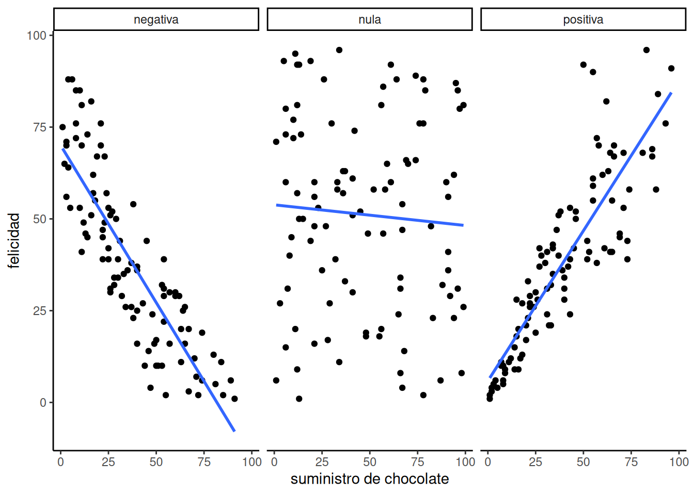
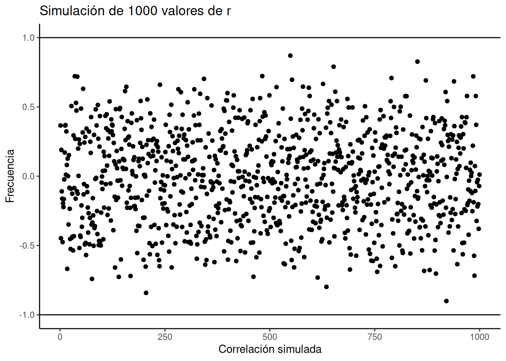
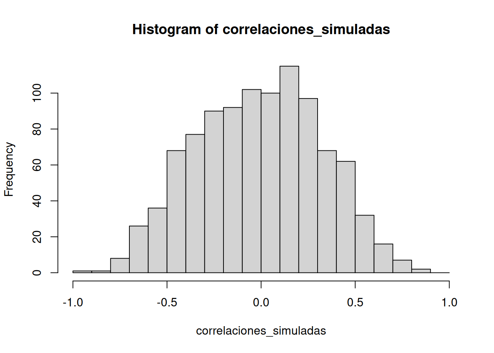
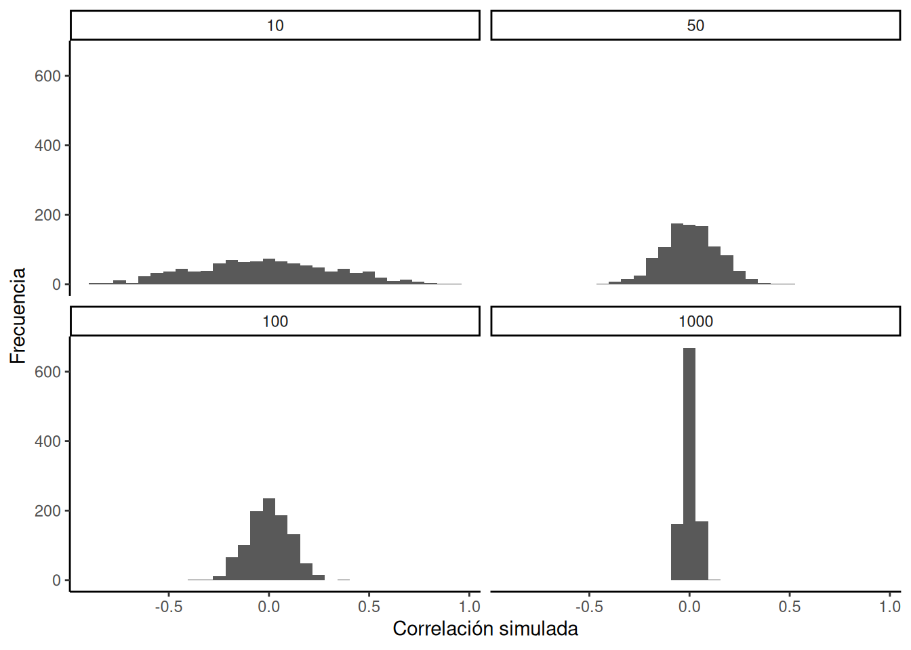

En el capítulo anterior teníamos un conjunto de datos. Era demasiado para mirar y no tenía mucho sentido. Así que hablamos de cómo visualizar los datos usando gráficos e histogramas, y de cómo resumir un montón de números para determinar su tendencia central (lo común) y su variabilidad (lo diferente). Y todo estaba bien en el mundo.
Pero no olvidemos la gran razón por la que aprendimos sobre estadísticas descriptivas. La gran razón es que estamos interesados en responder preguntas usando datos.
Si estás buscando un tema central para tener en mente durante este curso, es este: ¿cómo hacemos para formular y responder preguntas usando datos?
En cada sección del libro, deberías conectar ese diálogo interno con esta pregunta, y pensar: ¿cómo lo que estoy aprendiendo me ayuda a responder preguntas con datos?
Advertencia anticipada: sabemos que es fácil olvidarse de esto cuando nos metemos en los detalles, así que vamos a intentar tirarte una cuerda cada tanto… recordá: estamos tratando de responder preguntas con datos.
En el capítulo dos empezamos con unos datos ficticios sobre la felicidad humana, ¿te acordás? Imaginamos que le pedíamos a muchas personas que nos dijeran cuán felices se sentían, y luego mirábamos los números que nos daban. Sigamos con ese experimento mental imaginario.
3.1 Si algo causara que otra cosa cambie, ¿cómo se vería eso?
Antes de salir a buscar las causas de la felicidad, deberíamos prepararnos con algunas herramientas analíticas que nos permitan identificar cómo se ve una relación causal. Si no nos preparamos para lo que podríamos encontrar, no vamos a saber cómo interpretar nuestros propios datos. En cambio, necesitamos anticipar cómo se verían esos datos. En concreto, necesitamos saber cómo lucen los datos cuando una cosa no causa a otra, y cómo lucen cuando sí la causa. Este capítulo trata justamente de esa preparación. Advertencia: vamos a descubrir cosas complejas. Por ejemplo, hay patrones que parecen mostrar que una cosa causa a otra, incluso cuando en realidad no la causa. Aguantá, ya vamos a verlo.
El primer paso es recolectar unos datos imaginarios de 100 personas. Caminamos por ahí y le pedimos a las primeras 100 personas que respondan dos preguntas:
Para hacerlo más sencillo, ambas escalas van de 0 a 100. En la escala de chocolate, 0 significa “sin chocolate” y 100 significa “suministro vitalicio de chocolate”. Cualquier otro número está en el medio. En la escala de felicidad, 0 es “nada de felicidad”, 100 es “toda la felicidad”, y los valores intermedios reflejan distintos grados de felicidad en el medio.
Le hicimos dos preguntas a cada persona, así que hay dos valores por persona: uno para su suministro de chocolate, y otro para su nivel de felicidad. Capaz ya notás cierta relación entre la cantidad de chocolate y el nivel de felicidad en la tabla. Para que esas relaciones se vean aún más claras, vamos a graficar todos los datos.
sujeto_x<-1:100chocolate_x<-round(1:100*runif(100,.5,1))happiness_x<-round(1:100*runif(100,.5,1))df_positive<-data.frame(sujeto_x,chocolate_x,happiness_x)sujeto_x<-1:100chocolate_x<-round(1:100*runif(100,.5,1))happiness_x<-round(100:1*runif(100,.5,1))df_negative<-data.frame(sujeto_x,chocolate_x,happiness_x)sujeto_x<-1:100chocolate_x<-round(runif(100,0,100))happiness_x<-round(runif(100,0,100))df_random<-data.frame(sujeto_x,chocolate_x,happiness_x)all_data<-rbind(df_positive,df_negative,df_random)all_data<-cbind(all_data,correlation=rep(c("positiva","negativa","nula"),each=100))ggplot(all_data,aes(x=chocolate_x,y=happiness_x))+geom_point()+theme_classic()+facet_wrap(~correlation)+xlab("suministro de chocolate")+ylab("felicidad")
Figura 3.2: Tres diagramas de dispersión mostrando una correlación negativa, positiva, y ausencia de correlación
El primer panel muestra una correlación negativa. La felicidad disminuye a medida que aumenta el suministro de chocolate. La correlación negativa ocurre cuando una variable sube y la otra baja; o sea, cuando tener más de X implica tener menos de Y, y viceversa.
El segundo panel muestra una correlación positiva. La felicidad aumenta a medida que aumenta el suministro de chocolate. En una correlación positiva, ambas cosas suben juntas, o bajan juntas: más de X implica más de Y, y viceversa.
El tercer panel muestra ausencia de correlación. En este caso, no parece haber ninguna relación clara entre el suministro de chocolate y la felicidad. Los puntos están totalmente dispersos —el más disperso de todos los gráficos de dispersión.
Nota
Nos estamos metiendo en la idea de que las mediciones de dos cosas pueden estar relacionadas, o correlacionadas entre sí. Las relaciones pueden ser más complejas que simplemente “sube” o “baja”. Por ejemplo, podríamos tener una relación en la que los puntos suben en la primera mitad del eje X, y bajan en la segunda.
Una correlación nula ocurre cuando una cosa no está relacionada de ninguna forma con la otra: los cambios en X no tienen ninguna relación con los cambios en Y, y viceversa.
“Por favor no… otra vez no uses la palabra varianza”. Sí, lo vamos a hacer. Vamos a usar la palabra varianza una y otra vez, hasta que tenga sentido.
Recordá lo que significa la varianza respecto a un conjunto de números: significa que los números tienen cierta variación, que no son todos iguales, que algunos son más grandes y otros más chicos.
La covarianza es muy, muy, muy, muy importante. Sabemos que al principio puede ser una palabra confusa, especialmente si todavía no te sentís del todo cómodo con lo que significa varianza en una sola variable. Sin embargo, tenemos que seguir adelante y usar la idea de covarianza una y otra vez, para que quede bien grabada en tu mente estadística (sí, ya lo dijimos, pero repetir ayuda, es una cosa real).
ü߆ Consejo pro #2: Jugar bien a las palmas (paddy-cake) requiere que dos personas coordinen sus acciones. Eso es una covarianza positiva bien compartida.
3.3 Convertir los números en una medida de covarianza
“OK, si me decís que covarianza es otra forma de decir ‘correlación’ o ‘relación’ entre dos variables, me sirve. Supongo que deberíamos tener alguna forma de medir eso.” Correcto. Volvamos a nuestra tabla… ¿notás algo nuevo?
Ahora mirá la columna \(XY\). Son los productos que obtenemos al multiplicar cada valor de \(X\) con el correspondiente valor de \(Y\). Y la columna \(AB\) son los productos de \(A\) por \(B\) en cada fila. Hasta acá todo bien.
Lo que acabamos de hacer es inventar una medida de resumen específica para estos datos: una forma de cuantificar la correlación entre los números del 1 al 10 en X, y del 1 al 10 en Y, usando la suma de productos. Y como sabemos cuál es el máximo (385) y el mínimo (220), ahora podemos interpretar cualquier suma de productos de este tipo de datos respecto a esa escala.
ü߆ Consejo pro: Cuando la correlaci√≥n entre dos variables aumenta en direcci√≥n positiva, la suma de sus productos se acerca al valor máximo posible. Esto ocurre porque los números grandes en X tienden a alinearse con los números grandes en Y, creando la mayor suma de productos. Cuando la correlaci√≥n es negativa, la suma de los productos se acerca al valor m√≠nimo posible, porque los números grandes en X se alinean con los números peque√±os en Y. Si no hay correlaci√≥n, los números grandes de X se alinean aleatoriamente con los grandes y peque√±os de Y, haciendo que la suma quede en un valor intermedio.
La idea era darte una intuición conceptual sobre cómo se refleja la covarianza entre dos variables en la suma de sus productos. Hicimos algo bien simple: multiplicamos X por Y, y observamos cómo varía la suma de los productos cuando X e Y covarían de diferentes maneras. Ahora podemos ponernos un poco más formales. En estadística, la covarianza no es simplemente multiplicar los valores de X y Y. En realidad, se trata de multiplicar las desviaciones de X respecto de su media, por las desviaciones de Y respecto de su media. ¿Te acordás de esas diferencias con respecto a la media que vimos en el capítulo anterior? Bueno, ahora vuelven… pero tranquilos, vuelven en son de paz, como Gasparín, el fantasma amigable.
Veamos cómo se ve esto en una tabla:
Warning in rbind(deparse.level, ...): El número de columnas del resultado, 6,
no es un múltiplo de la longitud del vector 7 del argumento 2
–1 sería el valor mínimo para una correlación negativa perfecta.
+1 sería el máximo posible para una correlación positiva perfecta. 0 indicaría que no hay correlación.
En el laboratorio sobre correlación, vas a aprender a calcular correlaciones con datos reales usando software. Para darte una vista previa, miremos algunos datos del Informe Mundial de la Felicidad (2018).
Este informe mide diversas actitudes en personas de distintos países. Por ejemplo, una de las preguntas era sobre cuánta libertad sentían que tenían para tomar decisiones en la vida. Otra preguntaba cuánta confianza tenían en su gobierno nacional. La figura Figura 3.4 muestra un gráfico de dispersión con la relación entre estas dos variables. Cada punto representa promedios para un país diferente.
library(data.table)library(dplyr)whr_data <-fread('data/WHR2018.csv')# seleccionar variables y filtrar valores faltantessmaller_df <- whr_data %>% dplyr::select(country,`Freedom to make life choices`,`Confidence in national government`) %>% dplyr::filter(!is.na(`Freedom to make life choices`),!is.na(`Confidence in national government`))# graficar los datos con línea de mejor ajusteggplot(smaller_df, aes(x=`Freedom to make life choices`,y=`Confidence in national government`))+geom_point(alpha=.5)+geom_smooth(method=lm, se=FALSE)+theme_classic()+labs(x="Libertad para tomar decisiones en la vida",y="Confianza en el gobierno nacional")
`geom_smooth()` using formula = 'y ~ x'
Figura 3.4: Relación entre la libertad para tomar decisiones en la vida y la confianza en el gobierno nacional. Datos del Informe Mundial de la Felicidad de 2018
Ahora vamos a agregar una cosita más a lo que venimos aprendiendo sobre correlación. Se llama regresión lineal. Suena intimidante, y… en parte lo es. Mucho más adelante, vas a descubrir que todo lo que estamos por aprender es en realidad un caso especial de la regresión.
Pero no queremos que salgas corriendo todavía, así que ahora solo te presentamos los conceptos básicos.
sujeto_x<-1:100chocolate_x<-round(1:100*runif(100,.5,1))felicidad_x<-round(1:100*runif(100,.5,1))df_positive<-data.frame(sujeto_x,chocolate_x,felicidad_x)sujeto_x<-1:100chocolate_x<-round(1:100*runif(100,.5,1))felicidad_x<-round(100:1*runif(100,.5,1))df_negative<-data.frame(sujeto_x,chocolate_x,felicidad_x)sujeto_x<-1:100chocolate_x<-round(runif(100,0,100))felicidad_x<-round(runif(100,0,100))df_random<-data.frame(sujeto_x,chocolate_x,felicidad_x)all_data<-rbind(df_positive,df_negative,df_random)all_data<-cbind(all_data,correlation=rep(c("positiva","negativa","aleatoria"),each=100))ggplot(all_data,aes(x=chocolate_x,y=felicidad_x))+geom_point()+theme_classic()+geom_smooth(method="lm",se=F)+facet_wrap(~correlation)+xlab("suministro de chocolate")+ylab("felicidad")
`geom_smooth()` using formula = 'y ~ x'

Figura 3.5: Tres diagramas de dispersión que muestran una correlación negativa, una positiva y una aleatoria (donde se espera que el valor de r sea 0), junto con la línea de regresión de mejor ajuste
3.5.1 La línea de mejor ajuste
¿Notás algo particular en estas líneas azules? Esperamos que, al menos en los dos primeros paneles, puedas ver que pasan directamente por el medio de los datos, como si fueran un palito de brochette. A estas líneas las llamamos líneas de mejor ajuste, porque según la definición que vamos a ver (te prometemos que ya llega), no hay ninguna otra línea que puedas dibujar que haga un mejor trabajo atravesando los datos.
Una idea importante acá es que estamos usando la línea como una especie de “media” para describir la relación entre las dos variables.
Cuando solo tenemos una variable, esa variable existe en una dimensión: es un dato 1D. En ese caso, tiene sentido usar un único número —como la media— para describir su tendencia central.
Pero cuando tenemos dos variables, y las graficamos juntas, estamos en un espacio bidimensional. Entonces, para ese espacio 2D, podemos usar algo más grande —como una línea— para resumir la tendencia central en la relación entre ambas variables.
d <- mtcarsfit <-lm(mpg ~ hp, data = d)d$predicted <-predict(fit) # Guardar los valores predichosd$residuals <-residuals(fit) # Guardar los residuosggplot(d, aes(x = hp, y = mpg)) +geom_smooth(method ="lm", se =FALSE, color ="lightblue") +# Línea de regresióngeom_segment(aes(xend = hp, yend = predicted, color="red"), alpha = .5) +# Líneas rojas de errorgeom_point() +geom_point(aes(y = predicted), shape =1) +# Puntos blancostheme_classic() +theme(legend.position ="none") +xlab("X") +ylab("Y")
`geom_smooth()` using formula = 'y ~ x'
Figura 3.6: Los puntos negros representan los datos reales. La línea azul es la de mejor ajuste. Los puntos blancos indican los valores predichos por la línea azul. Las líneas rojas muestran el error entre cada punto real y su predicción. La línea azul es la mejor porque minimiza ese error.
La figura Figura 3.7 es una animación que muestra esto en acción.
La animación compara la línea azul (la de mejor ajuste) con otras líneas posibles (en negro).
La línea negra se mueve hacia arriba y abajo. Las líneas rojas muestran el error entre la línea negra y los puntos de datos.
A medida que la línea negra se acerca a la línea azul, el error total —representado visualmente como un área gris— se achica hasta su valor mínimo.
Ese error total se agranda a medida que la línea negra se aleja de la línea azul.
Figura 3.7: La línea azul es la línea de regresión que mejor explica la covariación entre los puntos negros. La línea negra se mueve hacia arriba y abajo, mostrando líneas alternativas que podrían trazarse. Las líneas rojas indican el error entre cada punto de datos y la línea negra. La cantidad total de error está representada por el área gris sombreada. Esta área se agranda a medida que la línea negra se aleja de la línea azul, y se achica al mínimo cuando la línea negra se acerca a la línea de mejor ajuste.”
Siempre que la línea negra no coincida con la línea azul, es peor que la línea de mejor ajuste.
La línea de regresión azul es como Ricitos de Oro: está justo en el medio, y es la adecuada.
La figura Figura 3.8 muestra cómo se comporta la suma de los errores al cuadrado (es decir, la suma de las longitudes al cuadrado de las líneas rojas) cuando movemos la línea hacia arriba o abajo. Lo que hacemos acá es calcular una medida del error total para cada posible posición vertical de la línea.
Ese gráfico muestra cómo el error disminuye hasta un mínimo cuando la línea está en la posición óptima, y aumenta otra vez cuando nos movemos más allá de ese punto.
d <- mtcarsfit <-lm(mpg ~ hp, data = d)d$predicted <-predict(fit) # Guardar los valores predichosd$residuals <-residuals(fit) # Guardar los residuoscoefs <-coef(fit)x <- d$hpmove_line <-seq(-5, 5, 0.5)total_error <-c(length(move_line))cnt <-0for (i in move_line) { cnt <- cnt +1 predicted_y <- coefs[2] * x + coefs[1] + i error_y <- (predicted_y - d$mpg)^2 total_error[cnt] <-sum(error_y)}df <-data.frame(move_line, total_error)ggplot(df, aes(x = move_line, y = total_error)) +geom_point() +theme_classic() +ylab("Suma de los errores cuadrados") +xlab("Cambio en la intersección con el eje y")
Figura 3.8: Suma de los errores cuadrados para diferentes líneas con distintas intersecciones. La suma mínima ocurre con la línea de mejor ajuste.
Bueno, decís. Así que hay una línea mágica que atraviesa el centro del diagrama de dispersión y minimiza la suma de los errores al cuadrado. ¿Cómo encuentro esa línea mágica?
Te lo vamos a mostrar. Pero, para ser completamente honestos, casi nunca vas a hacerlo de la manera que vamos a explicar acá.
En cambio, es mucho más fácil usar software y hacer que la computadora lo calcule por vos.
Vas a aprender a hacerlo así en los laboratorios.
Antes de mostrarte cómo encontrar la línea de regresión, vale la pena refrescar la memoria sobre cómo funcionan las líneas, especialmente en 2 dimensiones. ¿Te acordás de esto?
Esta es la fórmula de una línea recta. Otra forma de escribirla sería:
\(y = \text{pendiente} * x + \text{intercepto}\)
La pendiente indica la inclinación de la línea, y el intercepto o la intersección con el eje y es el punto donde la línea cruza el eje vertical.
Miremos las líneas de la figura Figura 3.9.
ggplot()+geom_abline(slope=1,intercept=5,color="blue")+geom_abline(slope=-1, intercept=15, color="red")+lims(x =c(1,20), y =c(0,20))+theme_classic()
Figura 3.9: Dos líneas diferentes con distintas intersecciones en el eje y (donde la línea cruza el eje vertical) y distintas pendientes. Una pendiente positiva hace que la línea suba de izquierda a derecha. Una pendiente negativa hace que la línea baje de izquierda a derecha.
Vale la pena mencionar cuánto cambiaron las cosas desde que existen las computadoras.
Antes, todo el mundo tenía que hacer estos cálculos a mano —¡un embole total!
Más allá de las ideas matemáticas profundas detrás de las fórmulas, muchas fueron diseñadas por conveniencia, para facilitar los cálculos a mano, porque no había computadoras.
Ahora que las tenemos, hacer las cuentas a mano suele ser solo un ejercicio de álgebra…
Tal vez sirve para forjar el carácter. Vos decidís.
Te vamos a mostrar las fórmulas.
Y vamos a resolver un ejemplo a mano. Sí, lo sabemos: es un horror.
Por cierto, deberías sentir un poco de lástima por mí mientras hago todo esto a mano por vos.
\(\text{pendiente} = m = \frac{n\sum{xy}-\sum{x}\sum{y}}{n\sum{x^2}-(\sum{x})^2} = \frac{7*231-34*39}{7*275-34^2} = 1.19\)
Genial. Ahora podemos verificar si lo hicimos bien.
Vamos a graficar los datos en un diagrama de dispersión y trazar una línea con pendiente = 1.19 y una intersección en el eje y de –0.221.
Como se muestra en la figura Figura 3.10, la línea debería atravesar el centro de los puntos.
Imaginemos un experimento donde cultivás 1000 plantas serpiente en tu casa. Cada planta recibe una cantidad diferente de agua por día, desde 0 cucharaditas hasta 1000 cucharaditas por día. Vamos a asumir que el agua forma parte del proceso causal que permite que las plantas crezcan.
Entonces, la cantidad de agua por día sería una de nuestras medidas. Y cada semana, medís cuánto crecieron las plantas. Esa sería la segunda medida.
3.6.1.1 Incluso cuando hay causalidad, puede que no haya correlación clara
La primera planta, que no recibe nada de agua, seguramente lo va a pasar mal y eventualmente morir. Debería mostrar el menor crecimiento semanal.
¿Y las plantas que reciben solo unas pocas cucharaditas al día? Quizás reciban justo lo necesario para mantenerse vivas, pero no para crecer mucho.
Si estás imaginando un gráfico de dispersión, cada punto sería una planta. Algunos puntos deberían estar en la esquina inferior izquierda (nada de agua = nada de crecimiento). A medida que aumenta el agua, los puntos deberían ir subiendo hacia la derecha: más agua, más crecimiento.
water<-seq(0,999,1)growth<-c(seq(0,10,(10/499)),seq(10,0,-(10/499)))noise<-runif(1000,-2,2)growth<-growth+noisesnake_df<-data.frame(growth,water)ggplot(snake_df, aes(x=water,y=growth))+geom_point()+theme_classic()+xlab("Agua (cucharaditas)") +ggtitle("Crecimiento imaginario de una planta serpiente\n en función del agua")
Figura 3.11: Ilustración de una posible relación entre la cantidad de agua y el crecimiento de la planta serpiente. El crecimiento aumenta con el agua, pero eventualmente vuelve a disminuir, porque demasiada agua hace que las plantas mueran.
Es cierto que parece más una V invertida que una U invertida, pero se entiende la idea, ¿no? Hay claramente una relación entre el riego y el crecimiento de la planta serpiente. Pero esa relación no es en una sola dirección. Como resultado, cuando calculamos el r de Pearson, obtenemos un valor que sugiere que no hay relación.
cor(growth,water)
[1] 0.02058351
Lo que esto significa, en realidad, es que no hay una relación lineal que se pueda describir con una sola línea recta. Cuando necesitamos líneas o curvas que cambien de dirección, estamos ante una relación no lineal.
Este ejemplo muestra algunas complicaciones al interpretar correlaciones. Ya sabemos que las plantas necesitan agua para crecer, así que esperamos que haya alguna relación entre la cantidad de agua y el crecimiento.
Si miramos solo la primera mitad de los datos, vemos una correlación positiva.
Si miramos solo la segunda mitad, vemos una correlación negativa.
Y si miramos todos los datos juntos, no vemos ninguna correlación.
Uf. Entonces, incluso cuando hay una conexión causal entre dos variables, eso no garantiza que obtengamos evidencia clara al calcular un coeficiente de correlación.
ü߆ Consejo pro: Esta es una de las razones por las que es tan importante graficar tus datos. Si ves un patr√≥n en forma de U invertida, entonces un análisis de correlaci√≥n probablemente no sea el mejor para esos datos.
3.6.1.2 Variable confundida, o problema de la tercera variable
Cualquiera puede correlacionar dos cosas que se puedan medir. Por ejemplo, podríamos tomar a 100 personas y preguntarles todo tipo de cosas, como:
Supongamos que encontramos una correlación positiva entre el salario anual y la felicidad. Notá que podríamos haber hecho exactamente lo mismo correlacionando felicidad con salario.
Si encontramos una correlación, ¿te animarías a decir que el salario causa felicidad?
Tal vez tiene algo que ver. Pero algo como la felicidad seguramente tiene muchas causas.
La plata podría hacer feliz a algunas personas directamente.
Pero, más probablemente, la plata les permite acceder a otras cosas… y quizás algunas de esas cosas sí generen felicidad.
A esas “otras cosas” les decimos variables de tercer orden o terceras variables.
Por ejemplo: quizás las personas que viven en lugares más lindos, con casas más caras, son más felices que quienes viven en lugares peores, con casas más baratas.
En ese escenario, no sería la plata la que causa felicidad, sino los lugares y casas que la plata puede comprar.
Y aunque eso fuera cierto, las personas pueden ser más o menos felices en un montón de situaciones diferentes.
La lección acá es que una correlación puede aparecer entre dos medidas debido a una tercera variable no medida directamente.
Entonces, aunque encontremos una correlación, no significa que podamos concluir nada firme sobre causalidad.
En este caso puntual, si calculamos el r de Pearson, podríamos obtener, por ejemplo, un valor como ( r = 0.51 ). Pero ya sabemos que ese valor no nos dice nada sobre la relación entre las bolillas del Polo Norte y las del Polo Sur. Sabemos que esa relación debería ser completamente aleatoria, porque así diseñamos el experimento.
Primero, notaríamos variación. El valor de r a veces sería positivo, a veces negativo, a veces grande y a veces pequeño.
Segundo, podríamos ver cómo se ve esa variación. Esto nos daría una ventana hacia los tipos de correlaciones que el azar, por sí solo, puede producir.
correlaciones_simuladas <-length(0)for(sim in1:1000){ Polo_norte <-runif(10,1,10) Polo_sur <-runif(10,1,10) correlaciones_simuladas[sim] <-cor(Polo_norte,Polo_sur)}sim_df <-data.frame(simulaciones=1:1000,correlaciones_simuladas)ggplot(sim_df, aes(x = simulaciones, y = correlaciones_simuladas))+geom_point()+theme_classic()+geom_hline(yintercept =-1)+geom_hline(yintercept =1)+ggtitle("Simulación de 1000 valores de r")

Figura 3.12: Otra figura que muestra el rango de valores de r que pueden obtenerse por azar.
La Figura 3.12 muestra esos 1000 valores de \(r\) obtenidos en la simulación. ¿Te resulta familiar el gráfico? Ya hicimos una simulación parecida antes. Cada punto en el gráfico representa el valor de ( r ) de una de las 1000 simulaciones. Como ves, los puntos están por todos lados, entre –1 y 1. La lección importante acá es que el azar produjo todas estas correlaciones. Eso quiere decir que podemos encontrar “correlaciones” en los datos que son completamente sin sentido, y que no reflejan ninguna relación causal entre una medida y otra.
Una cosa más para prepararte para la animación: abajo, en la figura ?fig-3reminder, hay tres diagramas de dispersión que muestran correlaciones negativa, positiva y nula entre dos variables. Ya viste ese gráfico antes. Solo te estamos recordando que las líneas azules ayudan a ver la dirección de la correlación.
Las correlaciones negativas ocurren cuando la línea baja de izquierda a derecha.
Las positivas, cuando la línea sube de izquierda a derecha.
Y las correlaciones nulas, cuando la línea es plana (ni sube ni baja).
Figura 3.13: Puntos de datos completamente aleatorios tomados de una distribución uniforme, con un tamaño muestral pequeño de 10. La línea azul gira a veces mostrando correlaciones grandes que se producen por azar
La figura Figura 3.14 muestra ese histograma de los valores simulados de \(r\).
hist(correlaciones_simuladas,breaks=seq(-1,1,.1))

Figura 3.14: Histograma que muestra la distribución de frecuencia de los valores de r obtenidos entre dos variables X e Y completamente aleatorias (tamaño muestral = 10). Todo el rango de valores de r puede surgir solo por azar. Los valores grandes de r son menos comunes que los pequeños.
Una forma de pensar esta pregunta es usar el histograma del azar como “ventana”. Si tu valor de ( r ) cae en el centro del histograma —digamos, cerca de 0—, entonces es muy probable que el azar haya podido generarlo. Pero si tu valor está lejos del centro —digamos, cerca de –0.8 o +0.8—, entonces es poco probable que lo haya generado el azar. Eso te da más confianza de que tu valor de ( r ) representa algo real.
Vamos a repetir la simulación de Monte Carlo, pero esta vez con diferentes tamaños muestrales. La figura Figura 3.15 muestra cuatro histogramas diferentes, que muestran valores de ( r ) generados por azar para tamaños de muestra de 10, 50, 100 y 1000.
Fijate en lo que pasa cuando aumentamos el tamaño muestral. Con muestras pequeñas (como 10), el azar puede producir una gran variedad de valores de ( r ). Pero a medida que aumentás el tamaño de la muestra, el histograma se vuelve más angosto. Eso significa que el azar tiene menos poder para producir valores extremos de ( r ).
Entonces, si trabajás con una muestra grande y encontrás un valor de ( r ) bastante alejado de cero, es mucho más probable que ese valor represente una relación real y no simplemente el azar.
Gracias. A continuación te traduzco fielmente esta sección del capítulo, incluyendo las leyendas, explicaciones y descripción de las animaciones, y recordando insertar los chunks de código donde correspondan:
La figura Figura 3.15 muestra cuatro histogramas diferentes con los valores de correlación de Pearson ( r ) para cada uno de los escenarios. Cada escenario involucra un tamaño muestral distinto: 10, 50, 100 y 1000.
`stat_bin()` using `bins = 30`. Pick better value with `binwidth`.

Figura 3.15: Histograma de 1000 valores simulados de r, generados al azar, con diferentes tamaños muestrales. Cada panel muestra el histograma para N = 10, 50, 100 y 1000. Cuanto más grande el tamaño muestral, más cerca de 0 tienden los valores de r generados por azar.
Cuando el tamaño muestral es 10, aparecen muchos valores diferentes de ( r ). Ese histograma es bastante plano y extendido. Pero a medida que el tamaño muestral aumenta, vemos que la ventana del azar se vuelve más angosta. Por ejemplo, cuando llegamos a N = 1000, casi todos los valores de ( r ) están muy cerca de 0.
Vamos a reforzar estas ideas con algunas animaciones más. Cuando el tamaño muestral es pequeño (N es chico), el error muestral puede causar todo tipo de “patrones” en los datos. Esto hace posible —y de hecho común— que aparezcan “correlaciones” entre dos conjuntos de números. Cuando aumentamos el tamaño muestral, el error muestral se reduce, lo que hace menos probable que aparezcan correlaciones solo por azar. Cuando N es grande, el azar tiene menos oportunidades de operar.
3.6.4.1 Ver cómo se comporta la correlación cuando no hay correlación
Abajo se muestran números generados aleatoriamente para dos variables, los graficamos, y mostramos la correlación usando una línea. Hay cuatro paneles, y cada uno muestra un tamaño muestral distinto: 10, 50, 100 y 1000 observaciones en cada muestra.
Figura 3.16: Animation of how correlation behaves for completely random X and Y variables as a function of sample size. The best fit line is not very stable for small sample-sizes, but becomes more reliably flat as sample-size increases.
¿Cuál de estas líneas deberías creer? Bueno, esperamos que veas que la línea correspondiente a N = 1000 es la más estable. Tiende a ser muy plana cada vez, y no depende tanto de la muestra en particular. En cambio, la línea con solo 10 observaciones va para cualquier lado.
En el ejemplo anterior, muestreamos números de una distribución uniforme. Muchos datos reales provienen de una distribución normal (o aproximadamente normal). Podemos repetir lo anterior, pero muestreando de una misma distribución normal. Igual habrá cero correlación real entre X e Y, porque todo fue generado al azar.
La figura ?fig-3normCorfour muestra el mismo comportamiento. Con tamaños muestrales pequeños, la correlación calculada fluctúa mucho. Con muestras grandes, no.
3.6.5 Ver cómo se comporta la correlación cuando realmente hay una correlación
A veces sí existen correlaciones entre dos variables que no son producto del azar. La figura Figura 3.17 muestra una animación con cuatro gráficos de dispersión. Cada uno muestra la correlación entre dos variables. Nuevamente, variamos el tamaño muestral: 10, 50, 100 y 1000 observaciones. Los datos fueron generados de forma que contengan una correlación positiva real. Así que deberíamos esperar que la línea suba desde la esquina inferior izquierda hacia la esquina superior derecha.
Sin embargo, los datos todavía tienen variabilidad. Así que esta vez, el error muestral debido al azar va a “difuminar” un poco la correlación. Sabemos que está ahí, pero a veces el azar puede hacer que desaparezca.
Notá que en el panel superior izquierdo (tamaño muestral = 10), la línea se mueve mucho más que en los otros paneles. Cada nuevo conjunto de muestras produce correlaciones distintas. A veces, la línea incluso se aplana o baja.
Pero a medida que aumentamos el tamaño muestral, vemos que la línea no cambia tanto: siempre va hacia arriba, mostrando una correlación positiva.
Figura 3.17: Cómo se comporta la correlación en función del tamaño muestral cuando existe una correlación real entre las variables X e Y.
La lección principal acá es que incluso cuando hay una correlación positiva real entre dos variables, podrías no verla si tu muestra es muy pequeña. Por ejemplo, podrías tener mala suerte con la muestra que recolectaste. Esa muestra podría mostrar una correlación negativa, ¡aunque la verdadera correlación sea positiva!
Lamentablemente, en el mundo real casi siempre tenemos solo una muestra, la que logramos recolectar. Así que siempre tenemos que preguntarnos si tuvimos suerte… o no.
En esta sección hablamos sobre la correlación, y empezamos a construir algunas intuiciones sobre estadística inferencial, que es el gran tema de los próximos capítulos. Por ahora, las ideas clave son:
Podemos medir relaciones en los datos usando herramientas como la correlación.
Las correlaciones que encontramos pueden deberse a muchas causas distintas, por eso son difíciles de interpretar.
El azar puede producir correlaciones, así que existe la posibilidad de que sean completamente sin sentido.
Sin embargo, podemos crear un modelo que represente exactamente lo que el azar puede hacer. Ese modelo nos dice si es más o menos probable que el azar genere correlaciones de cierto tamaño.
Podemos usar ese modelo del azar para ayudarnos a decidir sobre nuestros propios datos. Podemos comparar la correlación que encontramos con ese modelo, y preguntarnos si es probable que haya sido generada por azar.
Salsburg, David. 2001. The Lady Tasting Tea: How Statistics Revolutionized Science in the Twentieth Century. Macmillan.